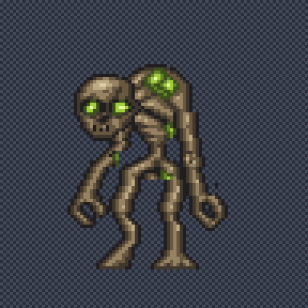
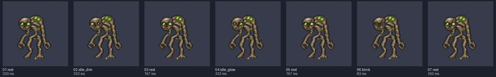
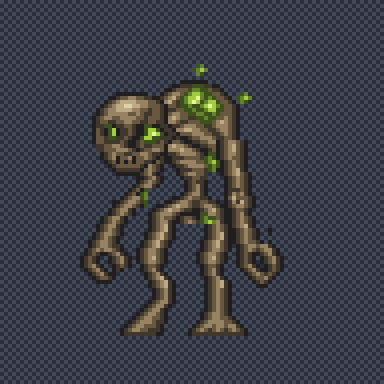
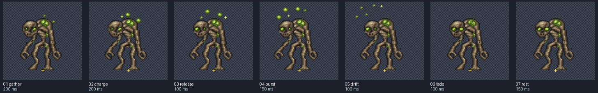

moss
Local preview. Reload to replay a non-looping clip. Yellow crosses mark the shared pivot on contact sheets.
idle
6 FPS · loop: True

Frames and timing

- rest: 333.33 ms
- idle_dim: 333.33 ms
- rest: 166.67 ms
- idle_glow: 333.33 ms
- rest: 166.67 ms
- blink: 83.33 ms
- rest: 250.00 ms
attack
10 FPS · loop: False

Frames and timing

- gather: 200.00 ms
- charge: 200.00 ms
- release: 100.00 ms
- burst: 150.00 ms
- drift: 100.00 ms
- fade: 100.00 ms
- rest: 150.00 ms